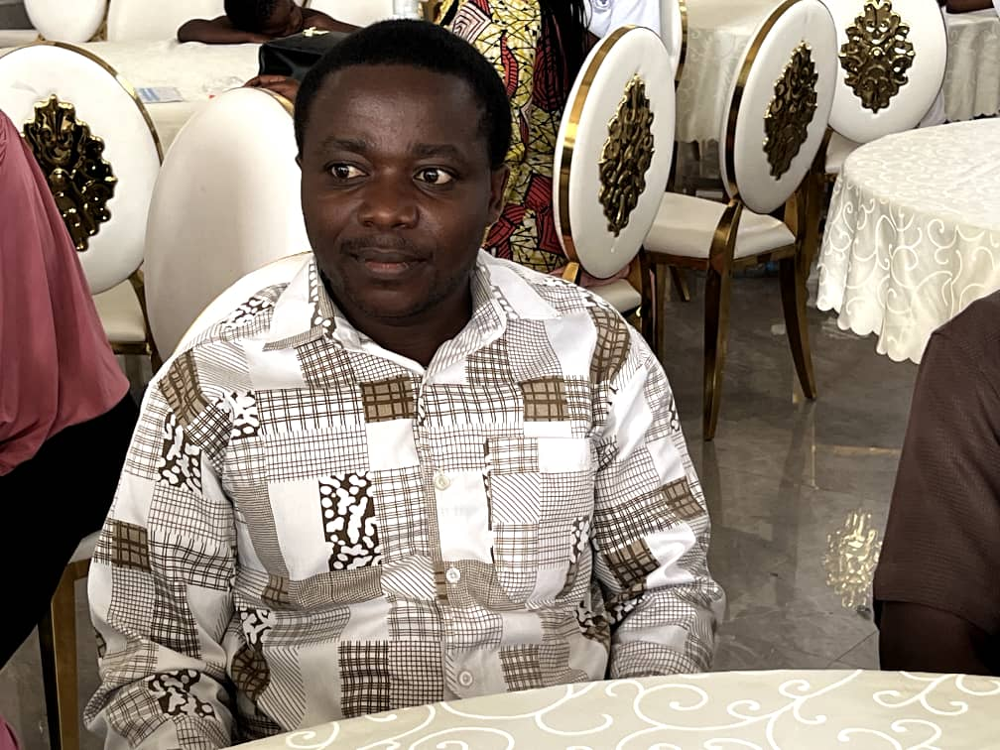
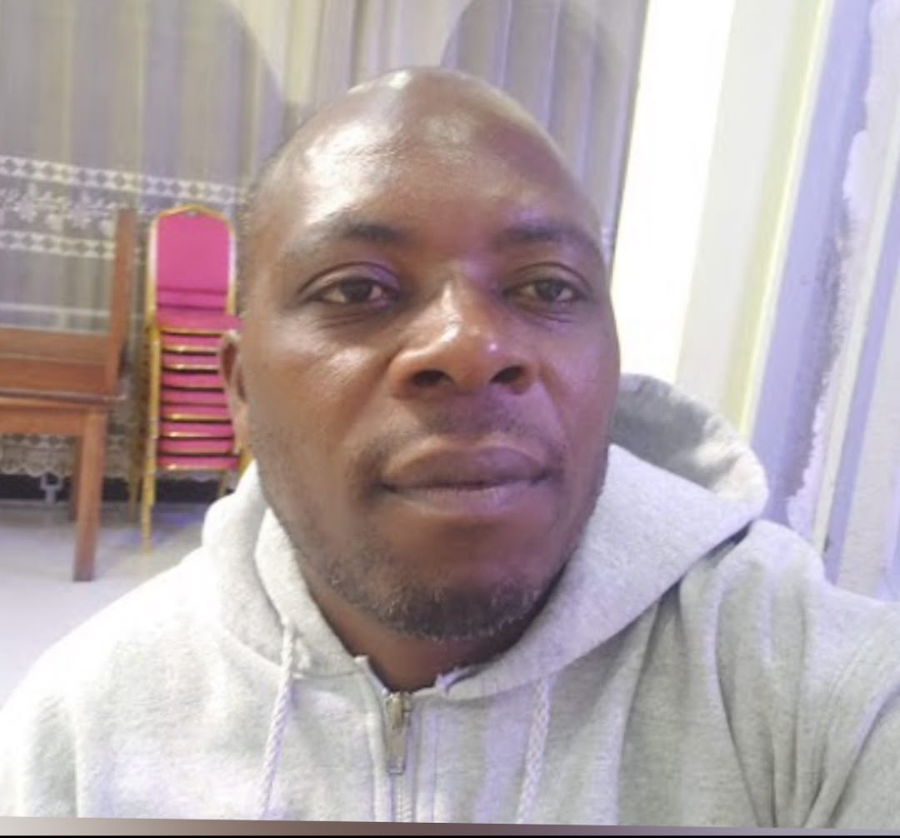

Notre Équipe
Des femmes et des hommes engagés pour la protection et le bien-être des enfants en RDC
L'équipe de HOPE CHILD-DRC est composée de professionnels passionnés et dévoués qui partagent une vision commune : « Offrir un avenir sûr, sain et épanoui à chaque enfant en RDC ». Notre structure organisationnelle repose sur une équipe opérationnelle engagée sur le terrain.
La Direction
L'équipe qui pilote la vision et la stratégie de l'organisation
RUHAMA BACISEZE GÉRARD
Coordonnateur / DirecteurAssure la direction générale de l'organisation, la coordination des programmes, les relations avec les partenaires et autorités, la mobilisation des ressources, la représentation de l'organisation et le suivi de la stratégie.
Nos Experts sur le Terrain
Les professionnels qui mettent en œuvre nos projets
JOSEPH MUHIRE
Chargé de ProgrammePlanifie, coordonne et supervise les programmes/projets. Prépare les plans d'action, budgets, rapports narratifs, chronogrammes et assure le suivi des résultats et indicateurs.

';">SELESTIN AMANI
Assistant ProgrammeAppuie le Chargé de Programme dans la planification, la collecte des données, la préparation des activités, le classement documentaire, le suivi des indicateurs et la rédaction des rapports.
CIRIMWAMI VICTOIRE KACHELEWA
LogisticienGère les achats, stocks, équipements, transports, biens et infrastructures. Assure la disponibilité des matériels nécessaires aux activités et veille au respect des procédures logistiques.
PATRICIA MULIMBIMA PENDO
Agent TerrainMet en œuvre les activités directement auprès des communautés bénéficiaires, sensibilise, collecte les données, identifie les besoins, accompagne les bénéficiaires et remonte les informations à l'équipe de projet.
BAENI BANDI TRESOR
IT / InformatiqueAssure la gestion du matériel informatique, des logiciels, des réseaux, de la sécurité des données, des systèmes de collecte numérique et de l'assistance technique au personnel.
LUKISA KALABO ARNOLD
Chargé de ProtectionConçoit et supervise les interventions de protection, identifie les risques auxquels sont exposés les enfants, organise les activités de prévention et veille au respect des principes de Protection de l'enfant, PSEA, AAP et Do No Harm.

NSHOKANO MUHIGIRWA Evodie
CaissièreAssure la gestion de la petite caisse, les paiements autorisés, la tenue du livre de caisse, la conservation des pièces justificatives et le suivi des mouvements financiers conformément aux procédures.
LOTINS N'KEKENI
Chef de ProjetResponsable opérationnel d'un projet spécifique. Planifie et supervise les activités, gère l'équipe, suit le budget, les indicateurs, les risques, la qualité et produit les rapports destinés à la coordination et aux bailleurs.

';">MUDE TABANA Mude
Conseiller TechniqueApporte un appui technique et stratégique à la coordination et aux équipes programmes. Contribue à l'amélioration continue de la qualité des interventions, au renforcement des capacités techniques et à l'orientation méthodologique des projets de HOPE CHILD-DRC.
Nos Volontaires Engagés
Des personnes qui donnent leur temps et leur énergie pour la cause
Rejoignez nos bénévoles
Nos bénévoles sont le cœur battant de HOPE CHILD-DRC. Ils interviennent sur le terrain, soutiennent nos programmes et apportent leur expertise dans divers domaines. Leur dévouement fait la différence dans la vie des enfants et des communautés que nous servons.
Devenir BénévoleRejoignez notre équipe
Vous partagez notre passion pour la protection des enfants et le développement communautaire ? Rejoignez HOPE CHILD-DRC et contribuez à changer des vies en RDC.